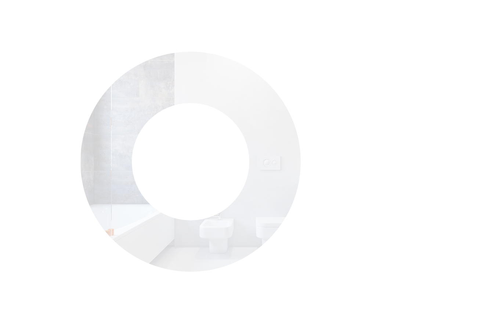
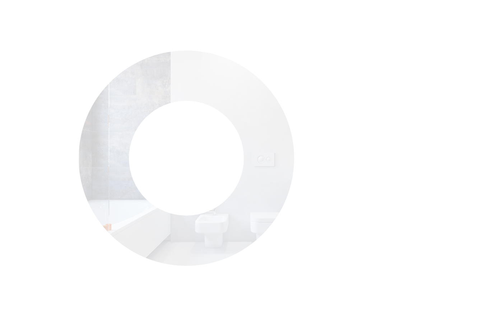

{% elseif man == 'man2' %}

{% elseif man == 'man2' %}

{{ caption }}
{{ p }}
{{ button() }}
{{ ul1() }}
{{ ul1() }}
{{ ul2() }}
{% elseif man == 'car' %}
{{ caption }}
{{ p }}
Самым востребованным и экономически выгодным является пневматический прокол. В компании «КрымКаналСервис» при проведении работ такого вида мы используем Крот. Этот аппарат хорошо себя показал при любом виде горизонтальной проходки с футляром.
Фотографии нашего оборудования:
{% for i in range(0,8) %}
 {% endfor %}
{% endfor %}
{% endfor %}